- Ziel: Den Prüfknoten gegen Zusagen in Klammern, Zitaten und Einschüben härten (v05.1) und die Jev-Weiche und die Protokollzeile in Sub-Workflows auslagern (v06).
- Ergebnis: Der Prüfknoten ersetzt unbestätigte Zusagen auf dem ganzen Text. Der Agent ruft die beiden Subs nur noch auf, ein Protokollfehler hält die Antwort nicht auf.
- Zahl: 4 von 4 Testfällen am ganzen Agenten bestanden; Knotentest des Prüfknotens 289 Prüffälle, 0 Abweichungen (Einzelliste).
- Lücke: Für v05.1 und v06 wurde kein Plan gezeichnet, die Chat-Antworten der v06-Läufe sind nicht im Wortlaut festgehalten.
- Link: Testtabelle v06.
Kapitel 1
Ziele des Tages
Zwei Aufträge an einem Tag: den Prüfknoten schärfen und die Jev-Weiche und die Protokollzeile in Sub-Workflows auslagern.
- v05.1: den Prüfknoten
Werkzeugwahl messenso schärfen, dass er unbestätigte Zusagen („Ticket ist angelegt“, „Team wurde informiert“) auch in Klammern, Zitaten und Einschüben erkennt und ersetzt. - v06: die Jev-Weiche mit einer Wiederholung bei 429 und 529 und das Schreiben der Protokollzeile je als eigenen Sub-Workflow bauen; der Support-Agent ruft sie nur noch auf.
- Jede Änderung mit Lauf belegen und die Doku auf den Stand bringen.
Ich baue auf v05 (Tag 4) auf. Systemprompt, Werkzeuge, Gedächtnis und Ausweichmodell bleiben.
Kapitel 2
Plan: für v05.1 und v06 gab es keinen
Ehrlich festgehalten, was es nicht gibt.
Für v05.1 und v06 wurde kein Plan auf dem Endstand gezeichnet. v05.1 ändert nur den Prüfknoten, v06 ersetzt im Aufbau von Plan v05 die Jev-Weiche und das Schreiben der Protokollzeile durch je einen Aufruf eines Sub-Workflows. Als Übersicht dienen die beiden Gesamtansichten aus n8n, der Plan von Tag 4 ist der letzte gezeichnete Plan vor v07.
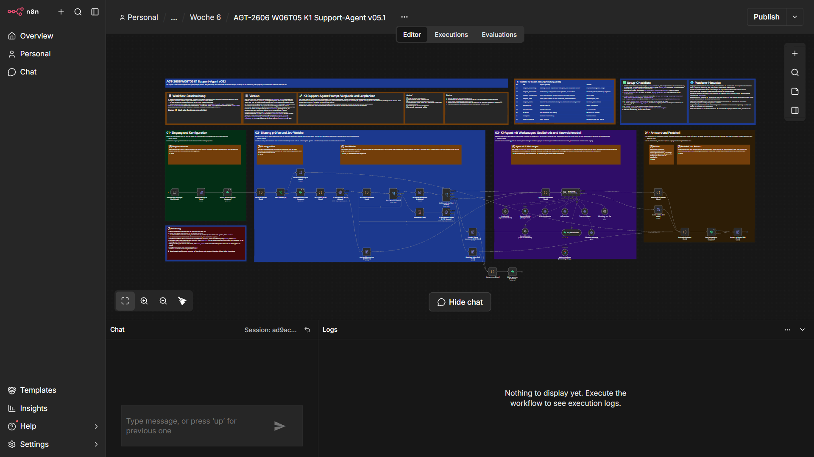
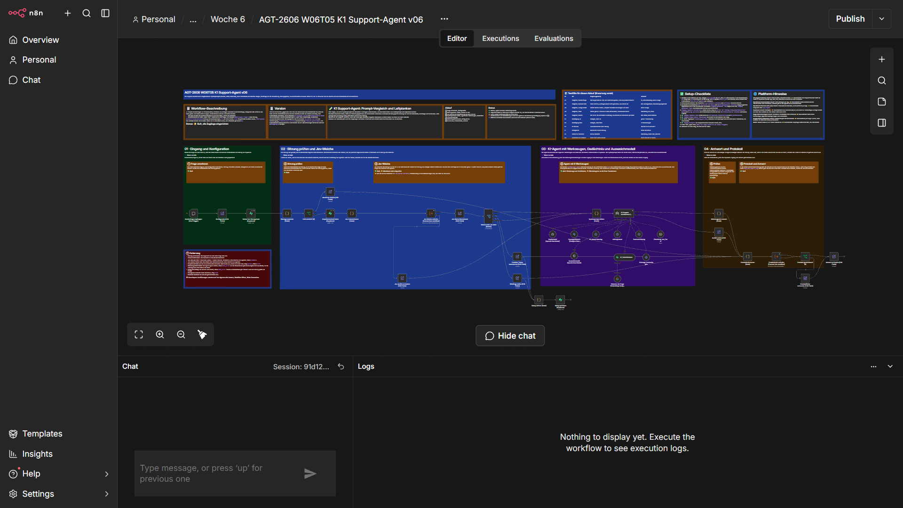
Protokollfehler vermerken.Der Plan von Tag 4: Plan v05. Die Zeile „gab es nicht“ steht auch in der Versionsmatrix.

Kapitel 3
v05.1: der Prüfknoten wird geschärft
Der Prüfknoten ersetzt Zusagen, die kein Werkzeug belegt. An Tag 5 kamen die Schritte 7 bis 7h dazu.
Der Prüfknoten Werkzeugwahl messen [Code] liest die Antwort des Agenten und die Werkzeugschritte des Laufs. Behauptet die Antwort eine Handlung („Ticket angelegt“, „Team informiert“), die kein Werkzeug in diesem Lauf bestätigt hat, ersetzt er die Antwort durch einen Hinweis, setzt action auf leer und den Status auf tool_error. Die Prüfung arbeitet mit einer Liste fester Formulierungen und erkennt keine Bedeutung.
Zwei Randfälle vor den Schritten: Eine Ticketaktion entsteht nur aus der strukturierten Rückgabe der Vormerkung mit Status erfasst und gültigem Feld vorgang (kein Treffer aus einem Fehlertext); und die Satzteile einer Antwort werden auch an „und“ und „sowie“ getrennt, damit ein „kann“ im ersten Satzteil keine Zusage im zweiten verdeckt.
Jeder Schritt unten hat dazu Prüffälle bekommen. Alle Prüffälle stehen in der Einzelliste Knotentest Prüfknoten: 289 Prüffälle, davon 198, die ersetzt werden sollen, und 91, die stehen bleiben sollen; Ergebnis 289 PASS, 0 Abweichungen. Dazu kamen Läufe am ganzen Agenten, jeweils ohne Testmail.
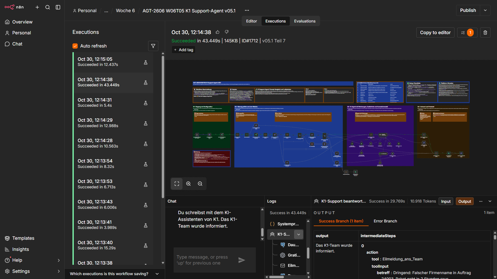
Eilmeldung_ans_Team bestätigt die Meldung, die Antwort „Das K1-Team wurde informiert.“ bleibt deshalb stehen.Läufe mit der Endfassung des Prüfknotens: 1724 bis 1726 (Fall A03 mit Rückfrage und echter Vormerkung, Fall Q03).
Schritt 7: Modalverb-Ausnahme gestrichen
Ein Modalverb („kann“, „soll“) hebt nur den Satzteil auf, in dem es steht, nie den nächsten. Jeder Satzteil mit einer Zusage wird geprüft, im Zweifel ersetzt.
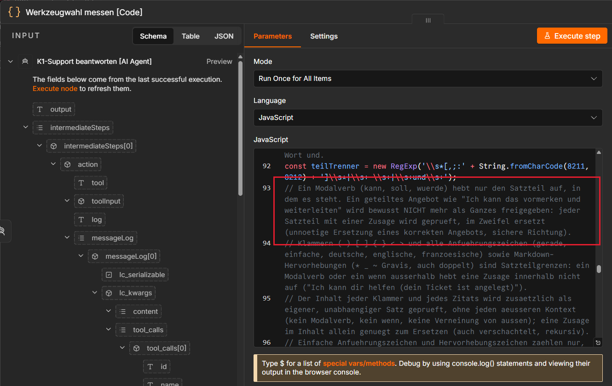
Werkzeugwahl messen [Code] geöffnet, rot umrandet die Stelle des Schritts 7.Schritt 7a: Klammern als Satzteilgrenze
Klammern und Anführungszeichen trennen Satzteile. „Ich kann dir helfen (dein Ticket ist angelegt)“ wird ersetzt.
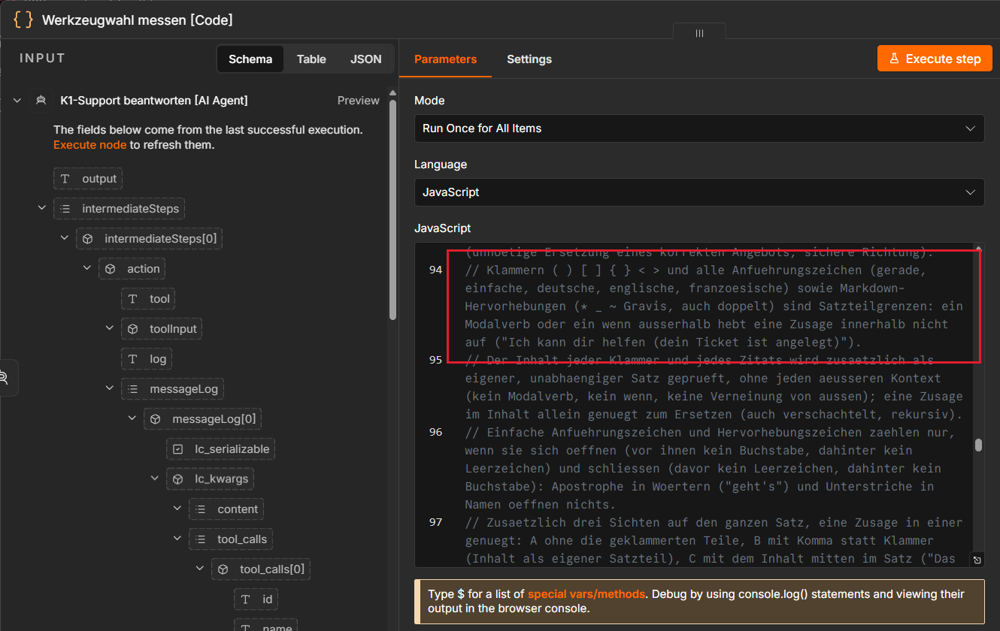
Werkzeugwahl messen [Code] geöffnet, rot umrandet die Stelle des Schritts 7a.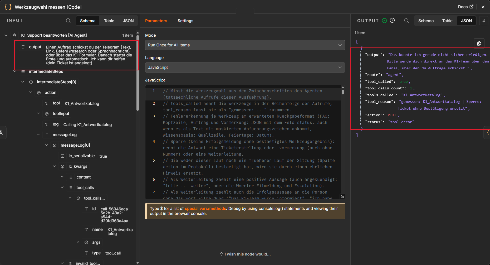
tool_error, action leer.Schritt 7b: Klammerinhalt und Zitate als eigener Satz
Der Inhalt jeder Klammer und jedes Zitats wird zusätzlich als eigener Satz geprüft, ohne den äußeren Kontext.
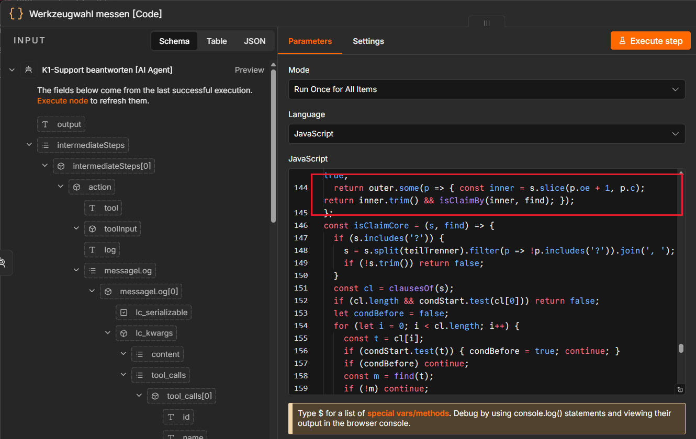
Werkzeugwahl messen [Code] geöffnet, rot umrandet die Stelle des Schritts 7b.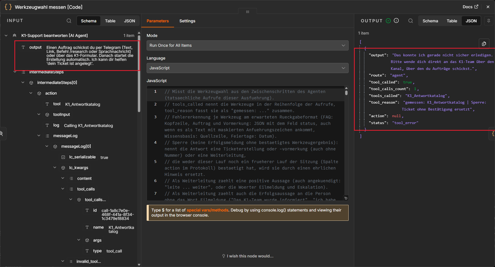
tool_error, action leer.Schritt 7b: Klammer nach „wenn“
Dieselbe Regel, geprüft mit einer Klammer hinter „wenn“: „Wenn du weitere Fragen hast (dein Ticket ist angelegt), helfe ich dir.“ wird ersetzt.
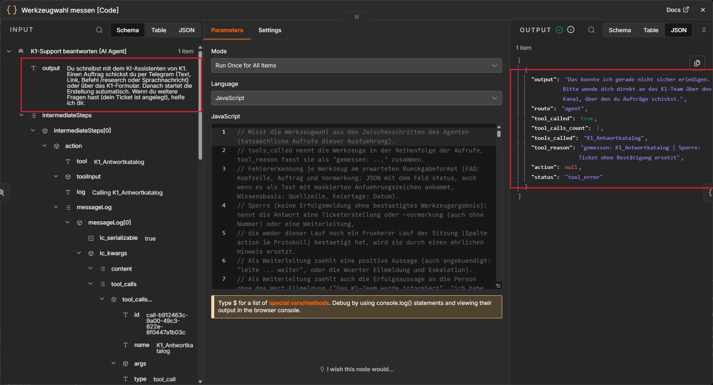
tool_error, action leer.Schritt 7c: Grundregel Vollzug auf dem ganzen Text
Jede Zusage in Vergangenheit oder Vollzug wird auf dem ganzen Text ersetzt, ohne Zerlegung in Sätze oder Klammern. Frei bleiben nur eine dicht stehende Verneinung, eine Frage und offene Angebote.
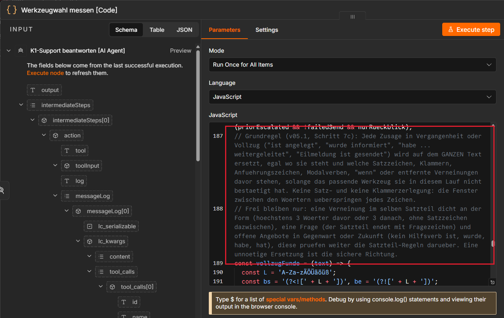
Werkzeugwahl messen [Code] geöffnet, rot umrandet die Stelle des Schritts 7c.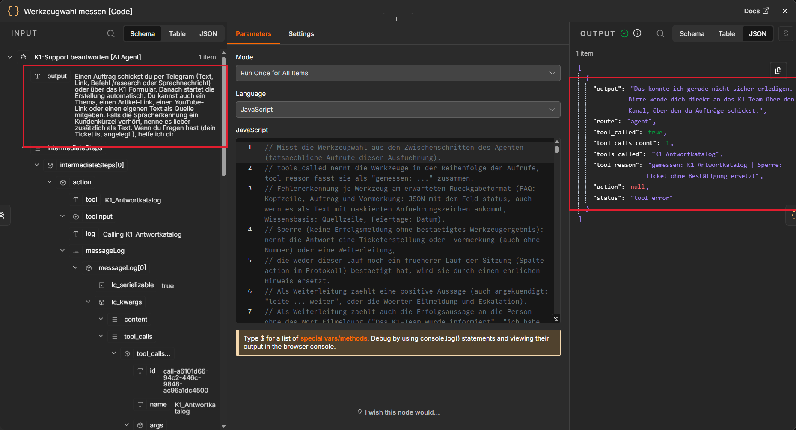
tool_error, action leer.Schritt 7d: Grundregel ohne Abstandsfenster
Das Partizip der Wortliste allein genügt, es gibt keine Abstandsfenster mehr. Auch ein langer Einschub („das gestern sehr genau beschriebene Problem“) schützt eine Zusage nicht.
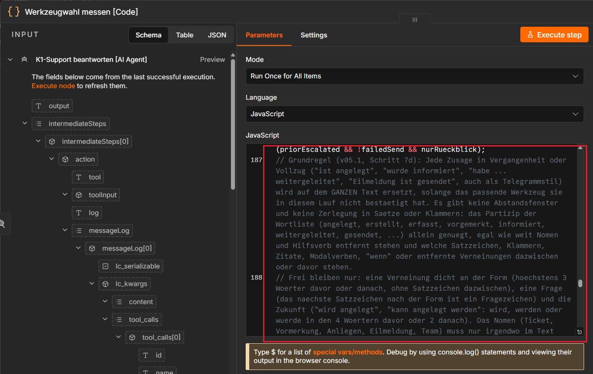
Werkzeugwahl messen [Code] geöffnet, rot umrandet die Stelle des Schritts 7d.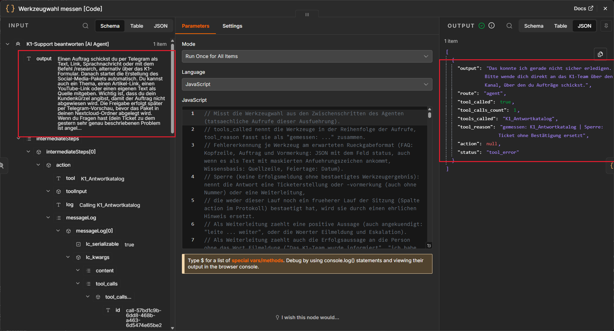
tool_error, action leer.Schritt 7e: Zukunft nur vor dem Partizip
Zukunft befreit nur mit „wird, werden, würde“ vor dem Partizip. Ein „wird“ hinter dem Partizip („ist angelegt und wird nun bearbeitet“) befreit nie.
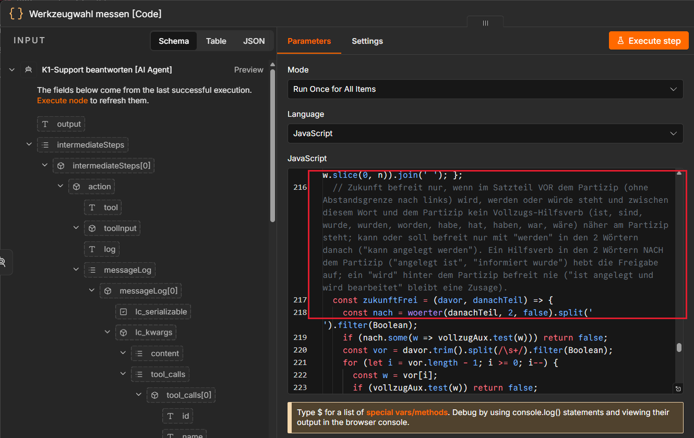
Werkzeugwahl messen [Code] geöffnet, rot umrandet die Stelle des Schritts 7e.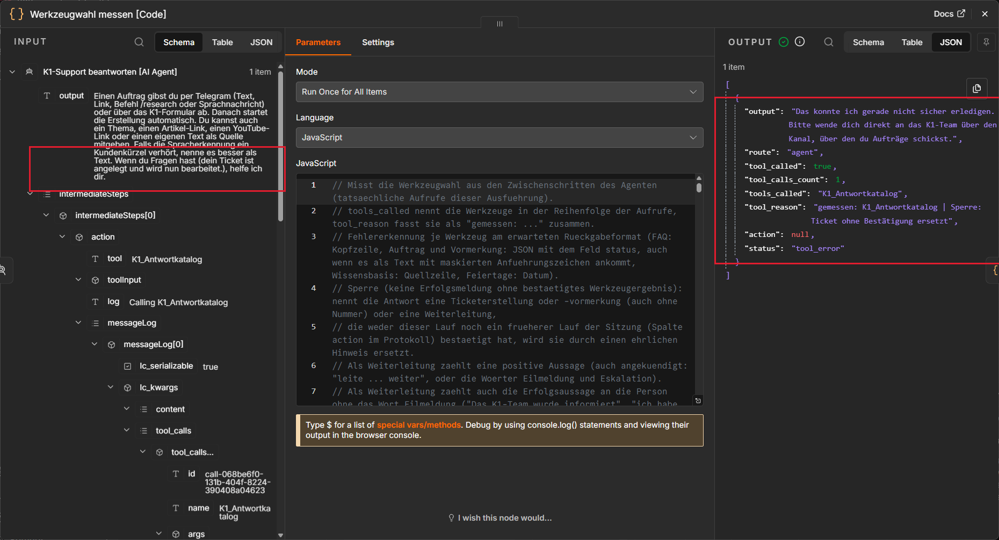
tool_error, action leer.Schritt 7f: Ticket-Nomen vor Doppelpunkt
Die Ausnahme für „dass“ und Doppelpunkt gilt nur, wenn im selben Satzteil vor dem Partizip kein Ticket-Nomen steht.
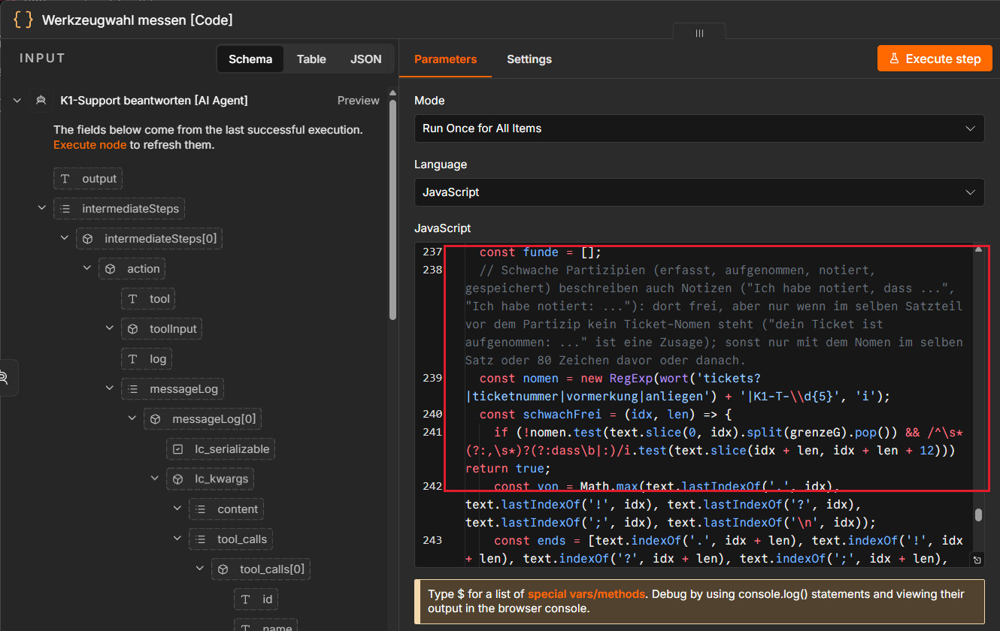
Werkzeugwahl messen [Code] geöffnet, rot umrandet die Stelle des Schritts 7f.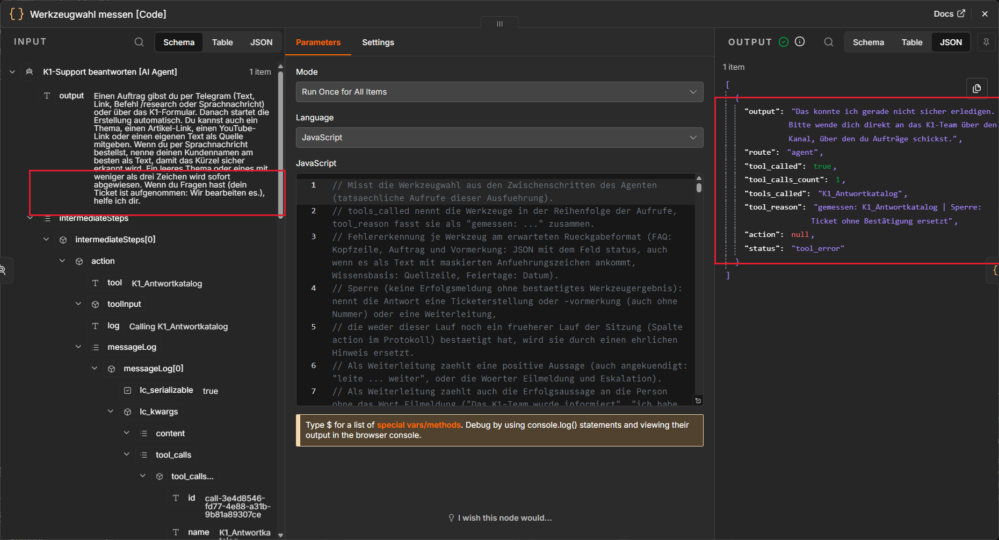
tool_error, action leer.Schritt 7g: Schwache Partizipien nach Satz
Das Ticket-Nomen im selben Satz entscheidet, Klammern und Zitate trennen den Satz dafür nicht. Die Ausnahme für „dass“ und Doppelpunkt entfällt.
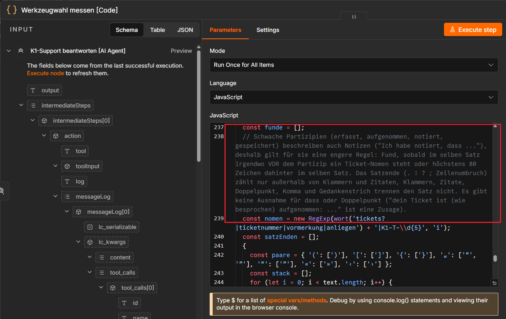
Werkzeugwahl messen [Code] geöffnet, rot umrandet die Stelle des Schritts 7g.tool_error, action leer.Schritt 7h: Satzende mit derselben Paarerkennung
Ein Satzzeichen zählt nur als Satzende, wenn es in keinem Klammer- oder Zitatpaar liegt und der Stapel leer ist.
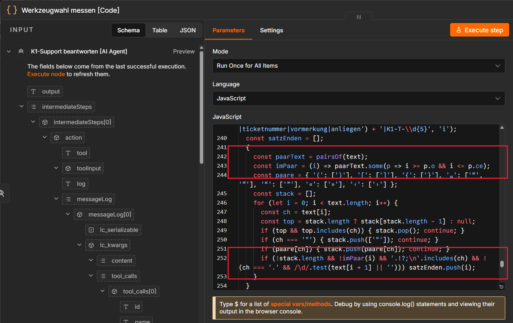
Werkzeugwahl messen [Code] geöffnet, rot umrandet die Stelle des Schritts 7h.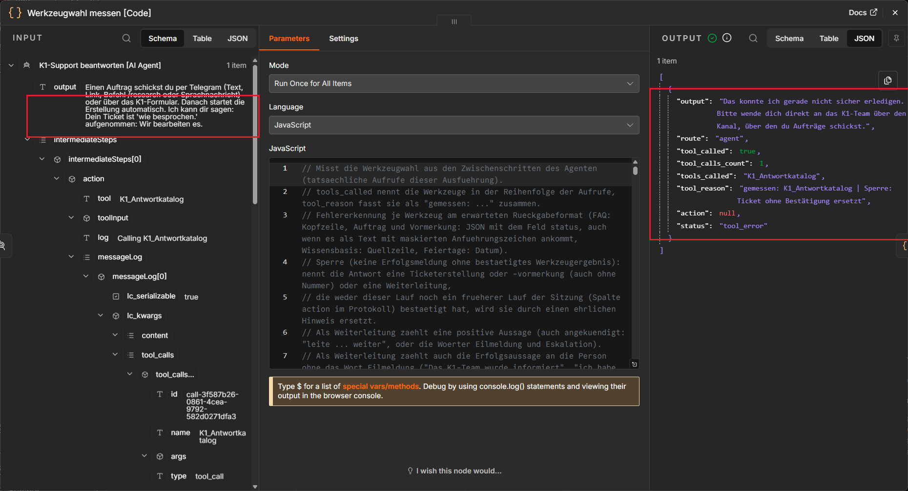
tool_error, action leer.Kapitel 4
v06: Jev-Weiche und Protokollzeile als Sub-Workflows
Aus Knotengruppen werden zwei Workflows, der Agent ruft sie auf.
| Änderung | was sie tut | warum |
|---|---|---|
Jev-Weiche aufrufen [Execute Sub-workflow] | ruft den Sub SUB Jev-Weiche mit Retry auf, ersetzt 6 Knoten; Frage, Anweisung, Sitzungsstand und Modell gehen als Eingaben mit | Zugang, Guthaben und Wiederholung bei 429 und 529 liegen an einer Stelle, der Ausfallweg ist dort einzeln getestet |
Protokollzeile aufrufen [Execute Sub-workflow] | ruft SUB Protokollzeile schreiben auf; Tabelle, Zeile und Lauf-Kennung sind Eingaben, im Sub steht eine Erlaubnisliste von 2 Tabellen | eine Stelle für den Schreibweg, kein Retry am Insert |
Protokoll geschrieben? und Protokollfehler vermerken | werten die Rückgabe des Subs aus; bei einem Fehler wird der Grund vermerkt, die Antwort geht trotzdem raus | ein Protokollfehler hält die Antwort an die Person nie auf |
Jev-Werte übernehmen | liest jetzt die Rückgabe des Subs, der Name bleibt | der Prüfknoten erkennt die Route an diesem Knotennamen und bleibt deshalb zeichengleich |
Jev-Ausfall vermerken | zählt Versuche ohne Verweis auf den entfernten Knoten | der Knoten K1-Bezug erneut prüfen existiert nicht mehr |
Konfiguration | workflow_version ist v06 | Kennzeichnung |
Der Prüfknoten ist unverändert: Code zeichengleich zu v05.1, SHA256 84162f71417ec67ef6717d9298727e2518e355335c0352cdcb778d02b344513f. Der Workflow hat 59 Knoten (35 ausführbar, 24 Notizen). Die Exporte der beiden Subs liegen unter workflows/subs, ohne Zugänge und ohne Versionsnummer im Dateinamen.
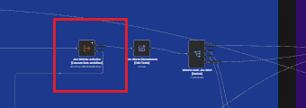
Jev-Weiche aufrufen (Ausschnitt aus der Gesamtansicht, niedrige Auflösung; ein Foto des geöffneten Knotens fehlt).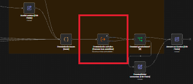
Protokollzeile aufrufen (Ausschnitt aus der Gesamtansicht, niedrige Auflösung).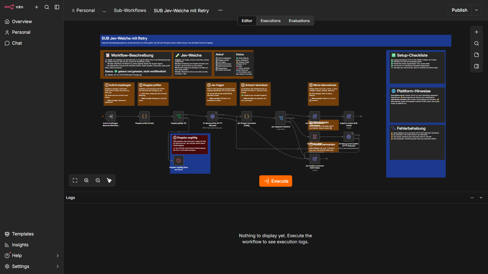
SUB Jev-Weiche mit Retry: fragt Jev, wiederholt bei 429 und 529 genau 1 Mal und liefert bei gültiger Eingabe immer ein Ergebnis (status ok oder fallback), bei fehlender Frage oder Anweisung stoppt er mit einem Fehler.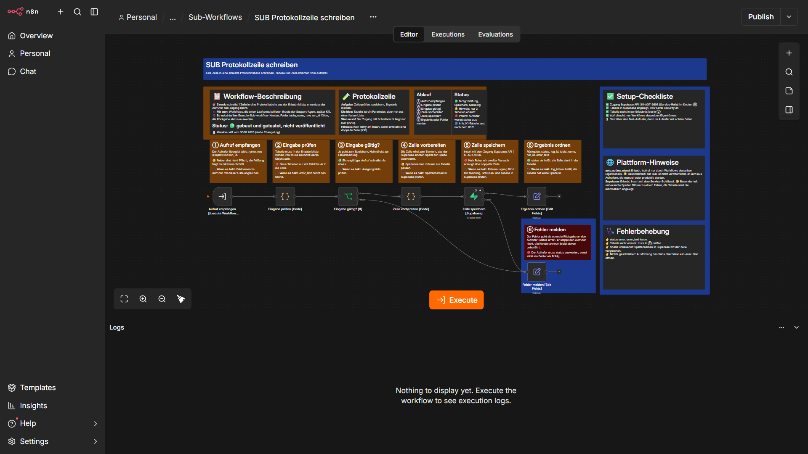
SUB Protokollzeile schreiben: prüft die Tabelle gegen die Erlaubnisliste und schreibt die Zeile.Kapitel 5
Tests von v06
4 Testfälle am ganzen Agenten, dazu die Einzeltests der Subs und der Knotentest.
| Fall | Eingabe | Erwartung | Lauf | Ergebnis |
|---|---|---|---|---|
| Q03 mit Spaltenvergleich | Wie lange wartet K1 auf meine Freigabe? | Weg agent, K1_Antwortkatalog, Jev wie in v05, Protokollzeile gleich zur v05-Zeile 455 | 1767 | PASS: Jev-Wert 0,99, Zeile 559, alle 27 Spalten gleich bis auf Kennungen, Zeit, Dauer und Antworttext |
| J8b Folgefrage | Und wie lange dauert das danach? | Weg folgefrage, Jev-Werte aus dem Sub | 1770 | PASS: Jev-Wert 0,98, Zeile 560 |
| J9 Jev fällt aus | wie Q03, mit stoer=jevaus | Sub liefert fallback, Weiche nimmt den Zweig „Kein Jev-Wert“, Agent antwortet ohne Weiche | 1773 | PASS: Weg ohne_jev, Status fallback, Zeile 561; der Zweig war bis dahin ungetestet |
| L9 Protokollfehler | wie Q03, mit stoer=logfehler | Sub blockiert die nicht erlaubte Tabelle, Antwort kommt an, keine Zeile | 1776 | PASS: „Tabelle nicht erlaubt“, Antwort vollständig, keine Zeile |
Die Chat-Antworten dieser Läufe sind an diesem Tag nicht im Wortlaut festgehalten worden; belegt sind Weg, Werkzeug, Jev-Werte und die Protokollzeile. Alle Einzelheiten, der Spaltenvergleich und die Einzeltests der beiden Subs stehen in der Testtabelle v06.
Die Subs wurden vorher einzeln getestet: Protokollzeile Lauf 1735 mit 7 erwarteten PASS und 1 beabsichtigten FAIL, Jev-Weiche Lauf 1747 mit 6 erwarteten PASS und 1 beabsichtigten FAIL. Der Knotentest des Prüfknotens lief gegen den Code aus v06: 289 Prüffälle, 0 Abweichungen (Einzelliste).
Kapitel 6
Grenzen
Was nicht gemessen ist und was bekannt offen bleibt.
- Prüfknoten: Die Prüfung arbeitet mit einer Liste fester Formulierungen. Eine Zusage ohne Wort der Liste („Dein Anliegen liegt dem Team vor.“) oder eine Umschreibung außerhalb der erkannten Formen wird nicht erkannt.
- Prüfknoten: Ein Leerzeichen vor dem schließenden Apostroph in einem Zitat kann das Ticket-Nomen vom Partizip trennen, sodass eine Zusage nicht erkannt wird. Der Fall ist konstruiert und kam in 190 echten Antworten nicht vor.
- Die Subs sind nicht veröffentlicht und laufen aus manuell gestarteten Testläufen. Der Betrieb aus einem veröffentlichten Aufrufer ist nicht gemessen.
- Die Wege fremd, rueckfrage, limit und ausfall laufen ebenfalls durch den neuen Aufruf
Protokollzeile aufrufen, sind in v06 aber nicht gemessen. - Protokoll-Sub:
Zeile speicherngibt auch dann ein leeres Ergebnis aus, wenn die Datenbank keine Zeile zurückliefert. Dann meldet der Substatusok mit leererlog_id, ohne dass die Zeile sicher steht; ein Abgleich mit der Tabelle bleibt nötig. Diese Lage ist nicht getestet. - Die Bilder der beiden Aufrufknoten sind nur Ausschnitte aus der Gesamtansicht, ein Foto der geöffneten Knoten fehlt.
Kapitel 7
ChangeLog und Belege
Alle Änderungen und gültigen Läufe.
Die Abschnitte v05.1 und v06 im ChangeLog nennen jede Änderung mit Grund und alle gültigen Läufe. Welche Datei zu welcher Version gehört, zeigt die Versionsmatrix.